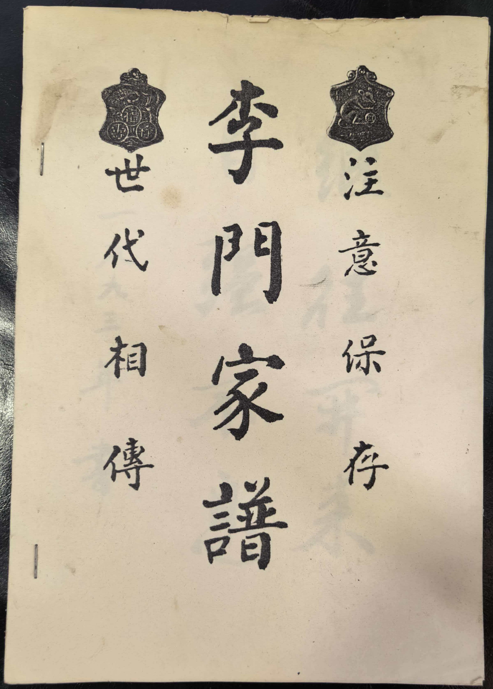
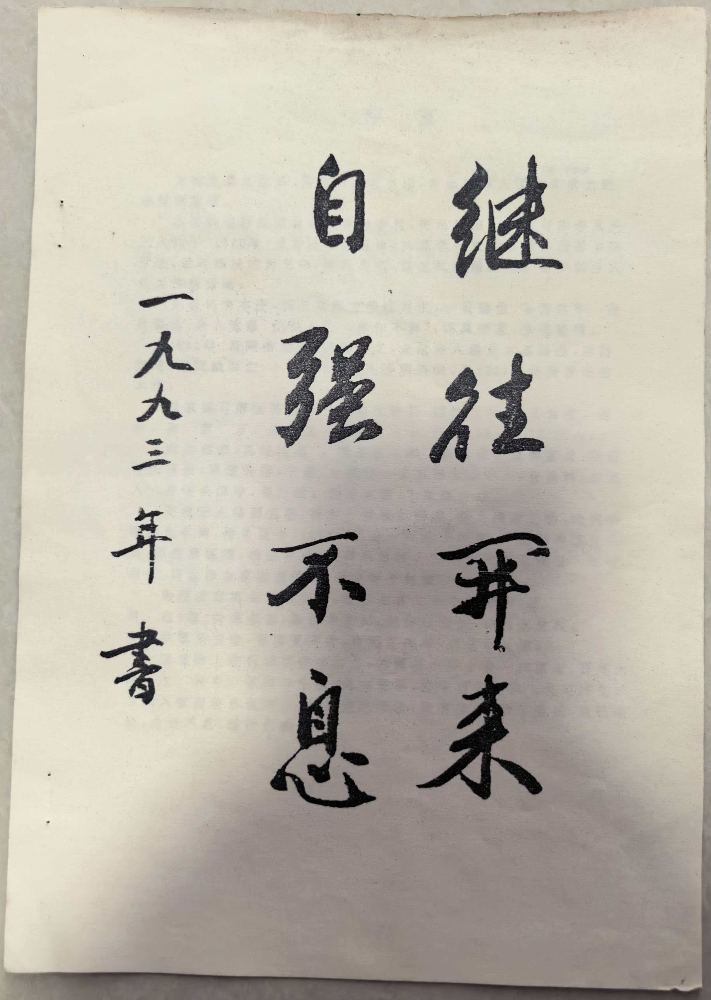
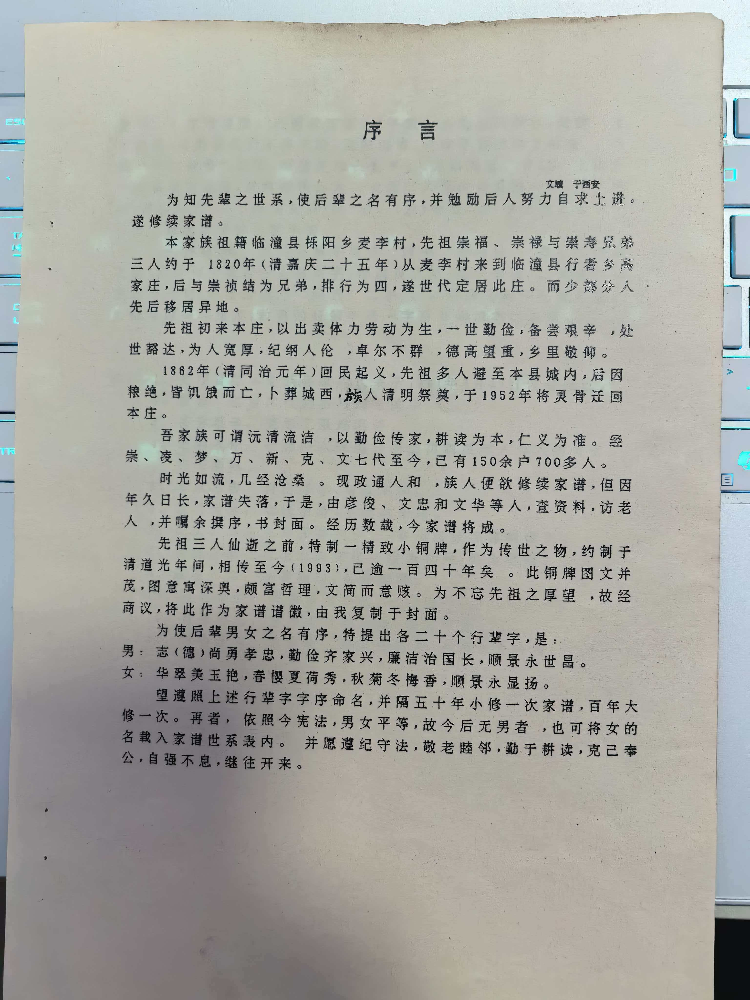
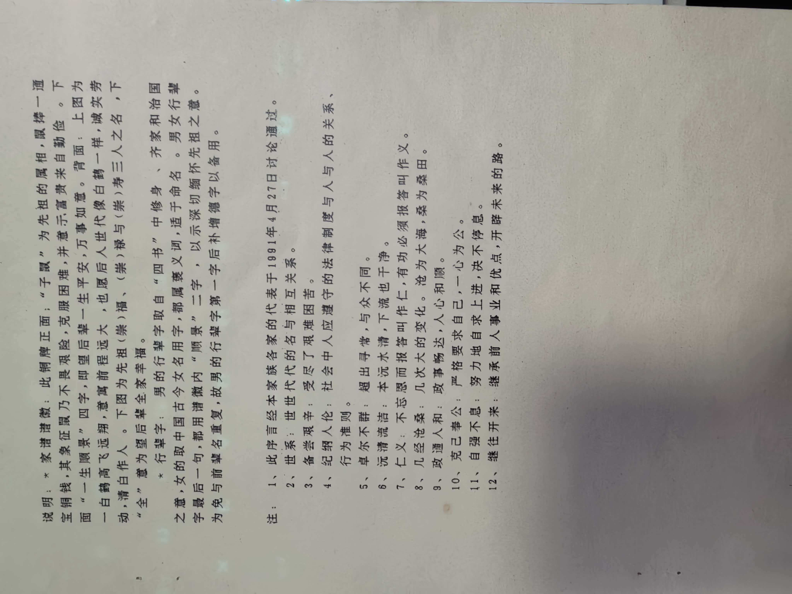
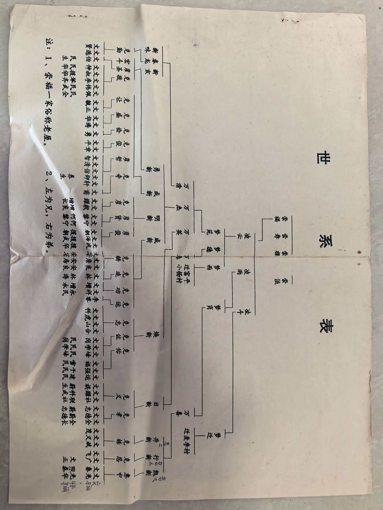
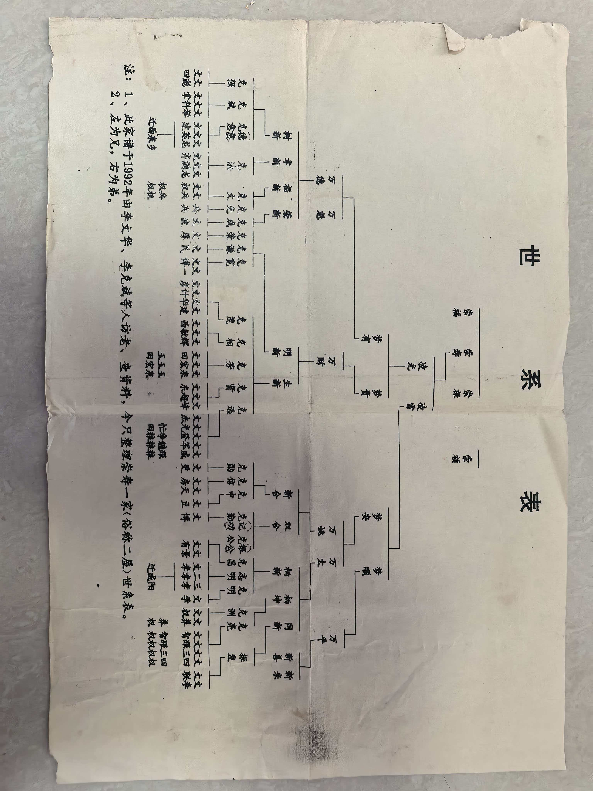

序言
为知先辈之世系，使后辈之名有序，并勉励后人努力自求上进，遂修续家谱。
本家族祖籍临潼县栎阳乡麦李村，先祖崇福、崇禄与崇寿兄弟三人约于 1820 年（清嘉庆二十五年）从麦李村来到临潼县行者乡高家庄，后与崇祯结为兄弟，排行为四，遂世代定居此庄。而少部分人先后移居异地。
先祖初来本庄，以出卖体力劳动为生，一世勤俭，备尝艰辛，处世豁达，为人宽厚，纪纲人伦，卓尔不群，德高望重，乡里敬仰。
1862 年（清同治元年）回民起义，先祖多人避至本县城内，后因粮绝，皆饥饿而亡，卜葬城西，族人清明祭奠，于 1952 年将灵骨迁回本庄。
吾家族可谓沅清流洁，以勤俭传家，耕读为本，仁义为准。经崇、凌、梦、万、新、克、文七代至今，已有 150 余户 700 多人。
时光如流，几经沧桑。现政通人和，族人便欲修续家谱，但因年久日长，家谱失落，于是，由彦俊、文忠和文华等人，查资料，访老人，并嘱余撰序，书封面。经历数载，今家谱将成。
先祖三人仙逝之前，特制一精致小铜牌，作为传世之物，约制于清道光年间，相传至今（1993），已逾一百四十年矣。此铜牌图文并茂，图意寓深奥，颇富哲理，文简而意赅。为不忘先祖之厚望，故经商议，将此作为家谱谱徽，由我复制于封面。
为使后辈男女之名有序，特提出各二十个行辈字，是：
男：志（德）尚勇孝忠，勤俭齐家兴，廉洁治国长，顺景永世昌。
女：华翠美玉艳，春樱夏荷秀，秋菊冬梅香，顺景永显扬。
望遵照上述行辈字字序命名，并隔五十年小修一次家谱，百年大修一次。再者，依照今宪法，男女平等，故今后无男者，也可将女的名载入家谱世系表内。并愿遵纪守法，敬老睦邻，勤于耕读，克己奉公，自强不息，继往开来。
说明：
* 家谱谱徽：此铜牌正面："子鼠" 为先祖的属相，鼠捧一通宝铜钱，其象征鼠乃不畏艰险，克服困难，并意示富贵来自勤俭。下面 "一生顺景" 四字，即望后辈一生平安，万事如意。背面：上图为一白鹤高飞远翔，意寓前程远大，也愿后人世代像白鹤一样，诚实劳动，清白作人。下图为先祖（崇）福、（崇）禄与（崇）寿三人之名，下 "全" 意为望后辈全家幸福。
* 行辈字：男的行辈字取自 "四书" 中修身、齐家和治国之意，女的取中国古今女名用字，都属褒义词，适于命名。男女行辈字最后一句，都用谱徽内 "顺景" 二字，以示深切缅怀先祖之意。为免与前辈名重复，故男的行辈字第一字后补增德字以备用。
注：
1、此序言经本家族各家的代表于 1991 年 4 月 27 日讨论通过。
2、世系：世世代代的名与相互关系。
3、备尝艰辛：受尽了艰难困苦。
4、纪纲人伦：社会中人应遵守的法律制度与人与人的关系、行为准则。
5、卓尔不群：超出寻常，与众不同。
6、沅清流洁：本沅水清，下流也干净。
7、仁义：不忘恩而报答叫作仁，有功必须报答叫作义。
8、几经沧桑：几次大的变化。沧为大海，桑为桑田。
9、政通人和：政事畅达，人心和顺。
10、克己奉公：严格要求自己，一心为公。
11、自强不息：努力地自求上进，决不停息。
12、继往开来：继承前人事业和优点，开辟未来的路。